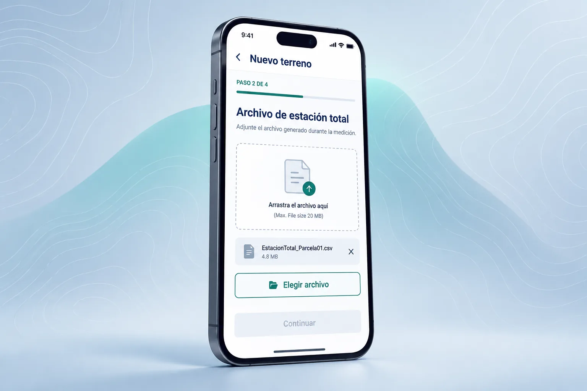

01 · FIELD AGENT
Plot and field sheet registration
Sends the measurement from the mobile app and accepts the plot in the web version after returning to the office. Also scans and uploads the field sheet as a PDF, linked to the beneficiary and the plot.